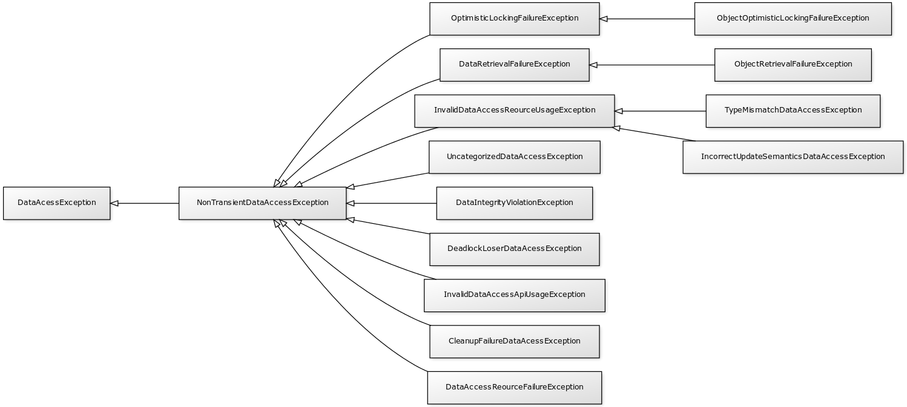

Spring DAO¶
DAO (Data Access Object) est une responsabilité qui est souvent utilisée dans
les applications d’entreprise. Dans le code source d’une application, on peut
trouver des classes nommées UserDao, ProducDao… Ce suffixe « Dao » dénote
que la classe a pour responsabilité d’accéder au système d’information pour lire
ou modifier des données. Comme la plupart des applications d’entreprise stockent
leurs données dans une base de données, les classes DAO sont donc les classes
qui contiennent le code qui permet d’échanger des informations avec la base de données.
En Java, selon la technologie utilisée, il peut s’agir des classes qui utilisent
l’API JDBC ou JPA par exemple.
Le module Spring Data Access reprend ce principe d’architecture en cherchant à simplifier l’intégration et l’implémentation des interactions avec les bases de données.
L’annotation @Repository¶
Nous avons vu précédemment que le Spring Framework définit des stéréotypes pour préciser le rôle des composants.
Le stéréotype le plus général est défini par l’annotation @Component. Mais, il est également possible d’utiliser l’annotation @Repository pour indiquer qu’une classe sert de point d’accès à un mécanisme de stockage et de recherche d’une collection d’objets.
Note
La notion de repository est empruntée à l’ouvrage de Eric Evans : Domain-Driven Design (Addison-Wesley 2003). Un repository est une catégorie de composant nous permettant de manipuler les objets du domaine métier. Repository est un terme plus général que DAO. En effet, ce dernier renvoie souvent à l’idée de technologie de persistance (la plupart du temps un SGBDR). Le terme Repository se veut neutre par rapport à l’implémentation sous-jacente.
package dev.gayerie;
import org.springframework.stereotype.Repository;
@Repository
public class UserDao {
public void save(User user) {
// ...
}
public User getById(long id) {
// ...
}
}
Intégration de JPA¶
Pour une application utilisant JPA, il est possible d’injecter un EntityManager dans un repository grâce à l’annotation @Autowired ou @Inject ou même @PersistenceContext.
Note
L’annotation @PersistenceContext est celle qui est recommandée par la norme JPA.
package dev.gayerie;
import javax.persistence.EntityManager;
import javax.persistence.PersistenceContext;
import org.springframework.stereotype.Repository;
@Repository
public class UserDao {
@PersistenceContext
private EntityManager entityManager;
public void save(User user) {
// ...
}
public User getById(long id) {
// ...
}
}
Le Spring Framework s’occupe pour nous de gérer la création et la fermeture de l’objet EntityManager. Si vous avez besoin de modifier des données dans la base de données, alors vous devrez sans doute penser à gérer explicitement les transactions. Nous aborderons spécifiquement ce point dans le chapitre Spring Transaction.
Intégration dans une application Spring Boot¶
Spring Boot est un projet conçu pour simplifier considérablement la configuration des applications basées sur le Spring Framework. Si Vous souhaitez intégrer le support de JPA dans votre application, il suffit d’ajouter la dépendance suivante :
<dependency>
<groupId>org.springframework.boot</groupId>
<artifactId>spring-boot-starter-data-jpa</artifactId>
</dependency>
Il ne faut pas oublier d’ajouter la dépendance vers le pilote de base de données JDBC. Spring Boot déclare déjà des dépendances et il n’est donc pas nécessaire de fournir le numéro de version.
<dependency>
<groupId>mysql</groupId>
<artifactId>mysql-connector-java</artifactId>
</dependency>
Contrairement à ce qu’impose la norme JPA, votre projet n’a pas besoin d’un
fichier de déploiement persistence.xml. Vous pouvez configurer directement
votre accès dans le fichier application.properties :
spring.datasource.url = jdbc:mysql://mydb:3306/my_database
spring.datasource.username = root
spring.datasource.password = root
spring.datasource.driver-class-name = com.mysql.jdbc.Driver
spring.jpa.show-sql = true
spring.jpa.properties.hibernate.dialect = org.hibernate.dialect.MySQL5Dialect
Note
La liste (impressionnante) des paramètres de configuration disponibles pour une application Spring Boot est consultable sur
Intégration dans une application sans Spring Boot¶
Si vous n’utilisez pas Spring Boot, vous devrez faire un travail d’intégration qui implique également de configurer le support des transactions. Reportez-vous au chapitre Spring Transaction qui détaille la configuration nécessaire dans ce cas là.
Accès aux données avec JDBC¶
Spring Data Access fournit la classe JdbcTemplate pour encapsuler les appels JDBC. Cette classe est simplement une classe utilitaire qui réalise :
la traduction d’une éventuelle SQLException dans la hiérarchie uniformisée des exceptions de Spring Data Access (Cf. section suivante).
l’encapsulation des appels à Statement et PreparedStatement
une aide pour la création d’objets à partir d’un ResultSet
La classe JdbcTemplate se construit à partir d’une DataSource. L’implémentation recommandée est de créer une instance de JdbcTemplate au moment de l’injection de la DataSource dans le bean. Ainsi, il est suffit de définir la DataSource dans le contexte de déploiement Spring de l’application.
package dev.gayerie;
import javax.sql.DataSource;
import org.springframework.beans.factory.annotation.Autowired;
import org.springframework.jdbc.core.JdbcTemplate;
import org.springframework.stereotype.Repository;
@Repository
public class UserDao {
private JdbcTemplate jdbcTemplate;
@Autowired
public void setDataSource(DataSource dataSource) {
this.jdbcTemplate = new JdbcTemplate(dataSource);
}
// ...
}
Note
L’implémentation de la classe JdbcTemplate est thread-safe. Cela signifie qu’elle peut être déclarée comme attribut d’un bean singleton utilisé dans un environnement concurrent (comme dans un serveur).
La classe JdbcTemplate permet d’exécuter des requêtes SQL de manière simplifiée.
package dev.gayerie;
import java.sql.ResultSet;
import java.sql.SQLException;
import java.util.List;
import javax.sql.DataSource;
import org.springframework.beans.factory.annotation.Autowired;
import org.springframework.jdbc.core.JdbcTemplate;
import org.springframework.jdbc.core.RowMapper;
import org.springframework.stereotype.Repository;
@Repository
public class UserDao {
private JdbcTemplate jdbcTemplate;
@Autowired
public void setDataSource(DataSource dataSource) {
this.jdbcTemplate = new JdbcTemplate(dataSource);
}
public int getUserCount() {
return jdbcTemplate.queryForObject("select count(1) from User", Integer.class);
}
public User getUserById(long id) {
return jdbcTemplate.queryForObject("select * from User where id = ?",
new Object[] {id}, new UserRowMapper());
}
public List<User> getAll() {
return jdbcTemplate.query("select * from User", new UserRowMapper());
}
private final class UserRowMapper implements RowMapper<User> {
@Override
public User mapRow(ResultSet rs, int rowNum) throws SQLException {
User user = new User();
user.setId(rs.getLong("id"));
user.setNom(rs.getString("nom"));
return user;
}
}
}
Dans l’exemple ci-dessus, la classe interne UserRowMapper implémente
l’interface RowMapper<T> qui permet de transformer une ligne retournée par
un ResultSet en objet.
Spring Data Access fournit également la classe utilitaire SimpleJdbcInsert pour faciliter la génération de requête d’insertion :
1 2 3 4 5 6 7 8 9 10 11 12 13 14 15 16 17 18 19 20 21 22 23 24 25 26 27 28 29 30 31 32 33 | package dev.gayerie;
import java.util.HashMap;
import java.util.Map;
import javax.sql.DataSource;
import org.springframework.beans.factory.annotation.Autowired;
import org.springframework.jdbc.core.JdbcTemplate;
import org.springframework.jdbc.core.simple.SimpleJdbcInsert;
import org.springframework.stereotype.Repository;
@Repository
public class UserDao {
private JdbcTemplate jdbcTemplate;
private SimpleJdbcInsert simpleJdbcInsert;
@Autowired
public void setDataSource(DataSource dataSource) {
this.jdbcTemplate = new JdbcTemplate(dataSource);
this.simpleJdbcInsert = new SimpleJdbcInsert(dataSource).withTableName("User");
}
public void save(User user) {
Map<String,Object> params = new HashMap<String, Object>();
params.put("name", user.getName());
simpleJdbcInsert.execute(params);
}
// ...
}
|
À la ligne 22, on crée une instance de SimpleJdbcInsert en précisant le nom
de la table pour laquelle on souhaite générer des requêtes d’insertion. Aux
lignes 26-27, on crée un dictionnaire des valeurs à insérer et enfin, à la
ligne 29, on appelle la méthode execute en passant le dictionnaire
des paramètres. La méthode génère et exécute la requête SQL d’insertion.
Avec cette classe utilitaire, il est même possible de récupérer la clé primaire générée (pour le cas d’une colonne auto increment avec MySQL par exemple) :
1 2 3 4 5 6 7 8 9 10 11 12 13 14 15 16 17 18 19 20 21 22 23 24 25 26 27 28 29 30 31 32 33 34 35 | package dev.gayerie;
import java.util.HashMap;
import java.util.Map;
import javax.sql.DataSource;
import org.springframework.beans.factory.annotation.Autowired;
import org.springframework.jdbc.core.JdbcTemplate;
import org.springframework.jdbc.core.simple.SimpleJdbcInsert;
import org.springframework.stereotype.Repository;
@Repository
public class UserDao {
private JdbcTemplate jdbcTemplate;
private SimpleJdbcInsert simpleJdbcInsert;
@Autowired
public void setDataSource(DataSource dataSource) {
this.jdbcTemplate = new JdbcTemplate(dataSource);
this.simpleJdbcInsert = new SimpleJdbcInsert(dataSource).withTableName("User")
.usingGeneratedKeyColumns("id");
}
public void save(User user) {
Map<String,Object> params = new HashMap<String, Object>();
params.put("name", user.getName());
Number key = simpleJdbcInsert.executeAndReturnKey(params);
user.setId(key.longValue());
}
// ...
}
|
Dans l’exemple ci-dessus, on précise à la ligne 23 la colonne correspondant à
la clé primaire. Puis, à la ligne 30, on appelle la méthode executeAndReturnKey
afin d’insérer les données et de récupérer la clé primaire du nouvel enregistrement
pour pouvoir la positionner dans l’objet de type User.
Intégration dans une application Spring Boot¶
Spring Boot est un projet conçu pour simplifier considérablement la configuration des applications basées sur le Spring Framework. Si Vous souhaitez intégrer le support du JdbcTemplate dans votre application, il suffit d’ajouter la dépendance suivante :
<dependency>
<groupId>org.springframework.boot</groupId>
<artifactId>spring-boot-starter-jdbc</artifactId>
</dependency>
Il ne faut pas oublier d’ajouter la dépendance vers le pilote de base de données JDBC. Spring Boot déclare déjà des dépendances et il n’est donc pas nécessaire de fournir le numéro de version.
<dependency>
<groupId>mysql</groupId>
<artifactId>mysql-connector-java</artifactId>
</dependency>
Vous pouvez configurer votre DataSource dans le fichier application.properties :
spring.datasource.url = jdbc:mysql://mydb:3306/my_database
spring.datasource.username = root
spring.datasource.password = root
spring.datasource.driver-class-name = com.mysql.jdbc.Driver
Note
La liste (impressionnante) des paramètres de configuration disponibles pour une application Spring Boot est consultable sur
Intégration dans une application sans Spring Boot¶
Si vous n’utilisez pas Spring Boot, vous devrez faire un travail d’intégration qui implique d’ajouter une DataSource dans votre contexte d’application. Créer une instance de DataSource est un sujet complexe en Java. Si vous déployez votre application dans un serveur d’application, il est possible que la DataSource soit fournie par le serveur lui-même. Si vous utilisez une DataSource locale à votre application (non gérée par un serveur d’application), alors peut-être utilisez-vous une pool de connexions qui fournira sa propre implémentation de DataSource ? Enfin, le Spring Framework fournit plusieurs classes implémentant l’interface DataSource. Par exemple, DriverManagerDataSource représente une DataSource à partir d’une connexion JDBC obtenue via le DriverManager.
package dev.gayerie;
import javax.sql.DataSource;
import org.springframework.beans.factory.annotation.Value;
import org.springframework.context.annotation.Bean;
import org.springframework.context.annotation.Configuration;
import org.springframework.jdbc.datasource.DriverManagerDataSource;
@Configuration
public class DatabaseConfiguration {
@Value("${spring.datasource.url}")
private String url;
@Value("${spring.datasource.username}")
private String username;
@Value("${spring.datasource.password}")
private String password;
@Bean
public DataSource dataSource() {
return new DriverManagerDataSource(url, username, password);
}
}
Vous devez également ajouter la dépendance vers Spring JDBC.
<dependency>
<groupId>org.springframework</groupId>
<artifactId>spring-jdbc</artifactId>
<version>5.3.1</version>
</dependency>
Il ne faut pas oublier d’ajouter la dépendance vers le pilote de base de données JDBC.
<dependency>
<groupId>mysql</groupId>
<artifactId>mysql-connector-java</artifactId>
<version>8.0.21</version>
</dependency>
Vous pourrez également avoir besoin de configurer le support des transactions. Pour cela, reportez vous au chapitre Spring Transaction.
Uniformité de la hiérarchie des exceptions¶
Un apport du module Spring Data Access est d’uniformiser la hiérarchie des exceptions. En effet, l’API JDBC utilise des exceptions héritant de SQLException qui est une checked exception. JPA utilise des unechecked exceptions héritant de PersistenceException. D’autres bibliothèques ou frameworks proposent à leur tour leur propre hiérarchie d’exceptions.
Pour simplifier la gestion des exceptions, Spring Data Access propose une hiérarchie unique d’exceptions pour toutes ces technologies afin de simplifier la gestion des erreurs pour les applications. Les exceptions émises par les bibliothèques sous-jacentes sont récupérées et encapsulées dans des types d’exception définis par Spring Data Access.
À la base de cette hiérarchie, la classe DataAccessException est une unchecked exception (elle hérite de RuntimeException).
Pour une application Spring Boot, vous pouvez contrôler l’activation ou non
de l’uniformisation des exceptions avec la propriété
spring.dao.exceptiontranslation.enabled dans le fichier
application.properties. Cette propriété vaut true par défaut.
Pour une application sans Spring Boot, l’uniformisation de la hiérarchie des exceptions n’est pas activée par défaut pour JPA. Pour l’activer, il faut utiliser l’annotation @Repository et ajouter dans le contexte d’application un bean de type PersistenceExceptionTranslationPostProcessor.
@Bean
public PersistenceExceptionTranslationPostProcessor persistenceExceptionTranslationPostProcessor() {
return new PersistenceExceptionTranslationPostProcessor();
}